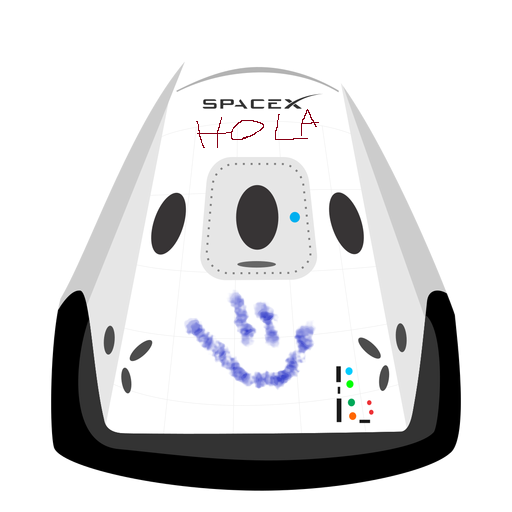

Hyperblog
Tu blog de cabecera cabecera
Este es el título atractivo e interesante del post
Y este es el párrafo de inicio donde vamos a explicar los casas increíbles que se pueden hacer con ramas

Los blogs son la mejor forma de compartir informacion y tus ideas. Mucho mas que ir a conferencias o salir en YouTube. Exepto si eres un rockstar. Pero estadisticamente no lo eres... por ahora.
Suscribite y dale like